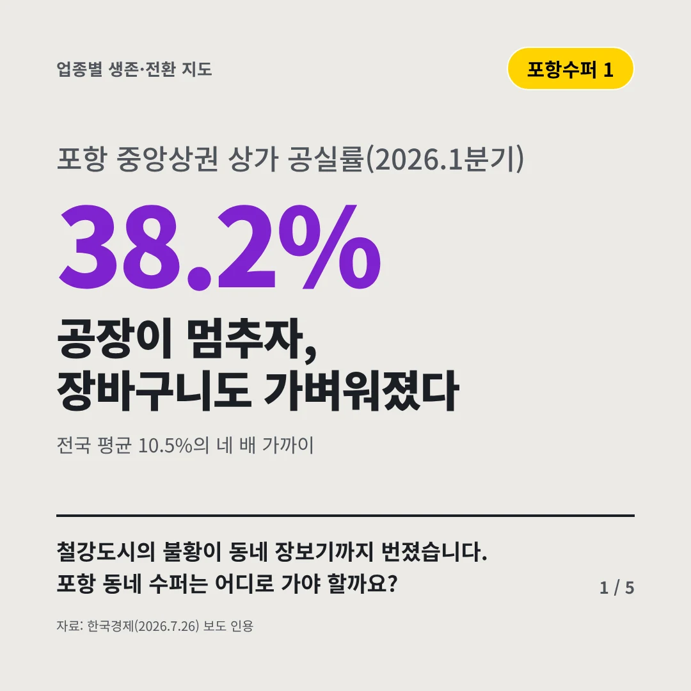
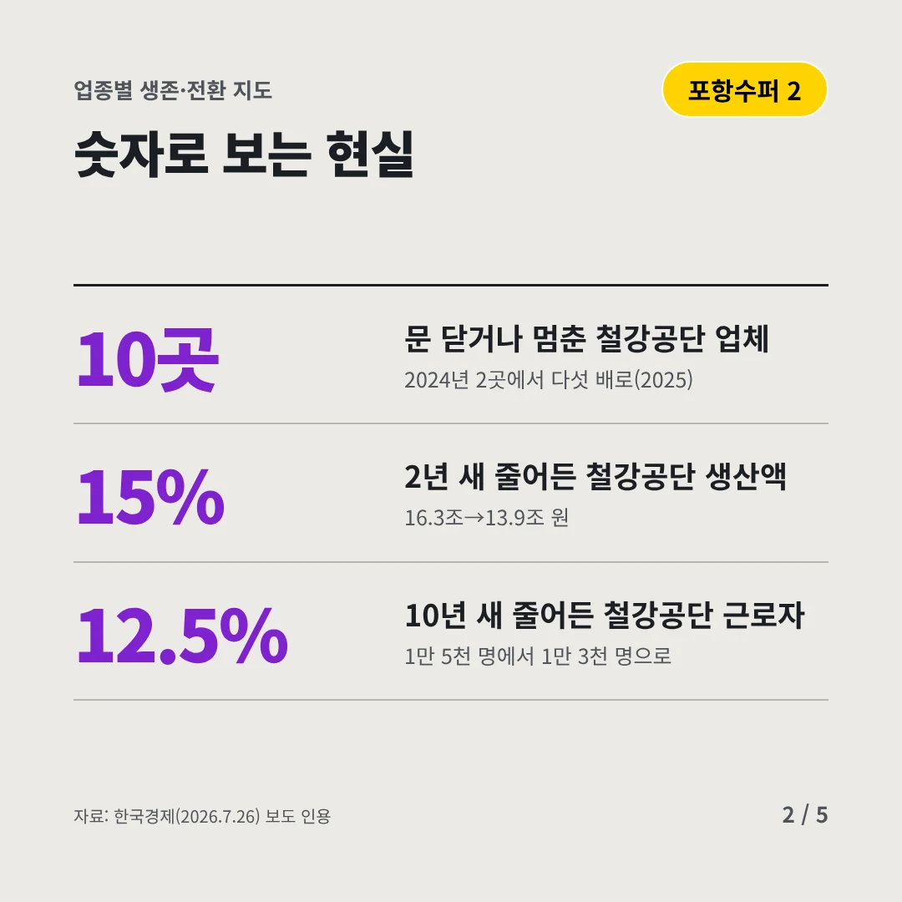
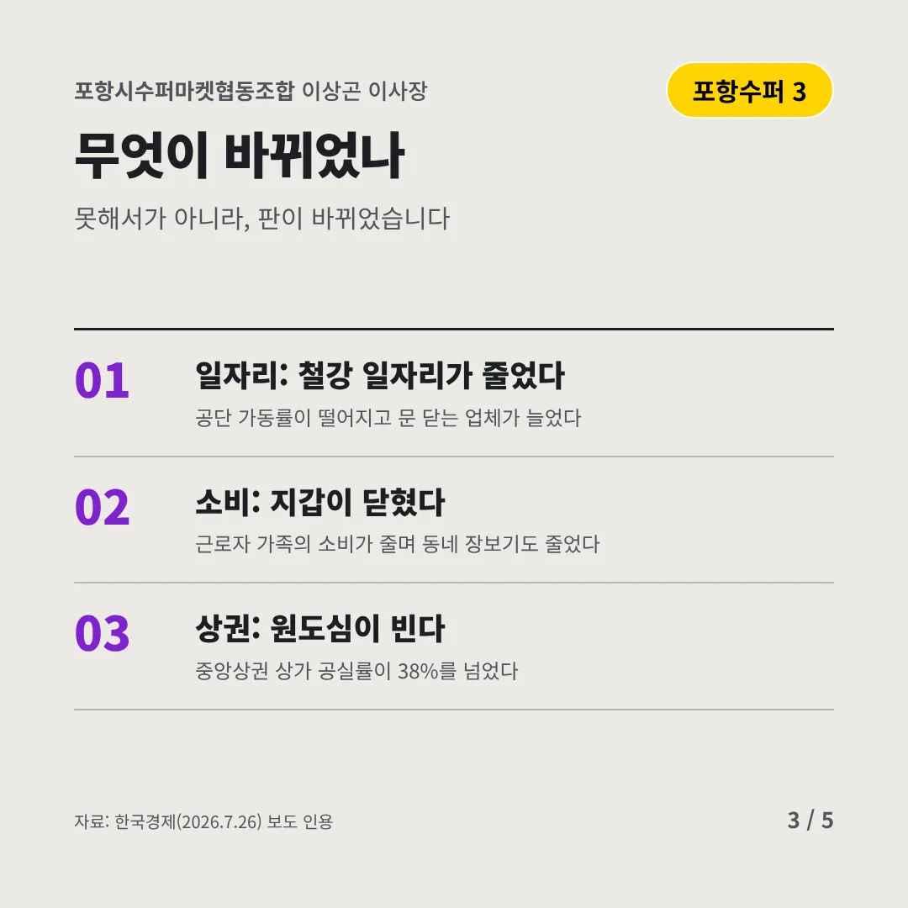
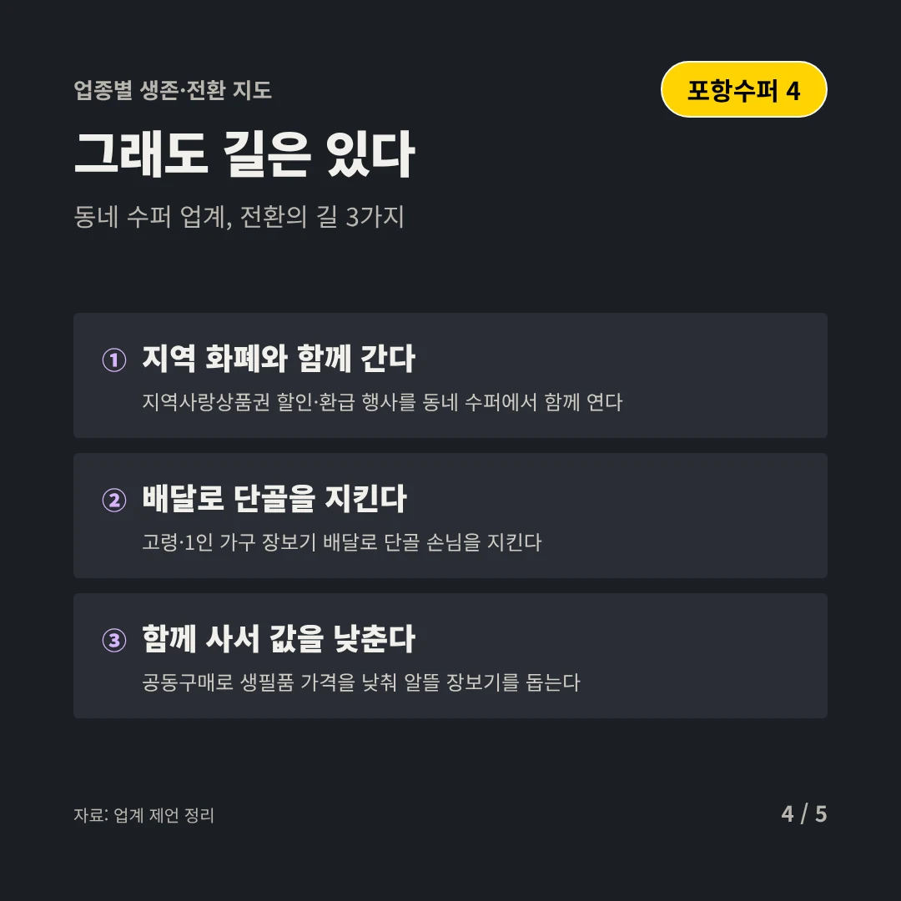
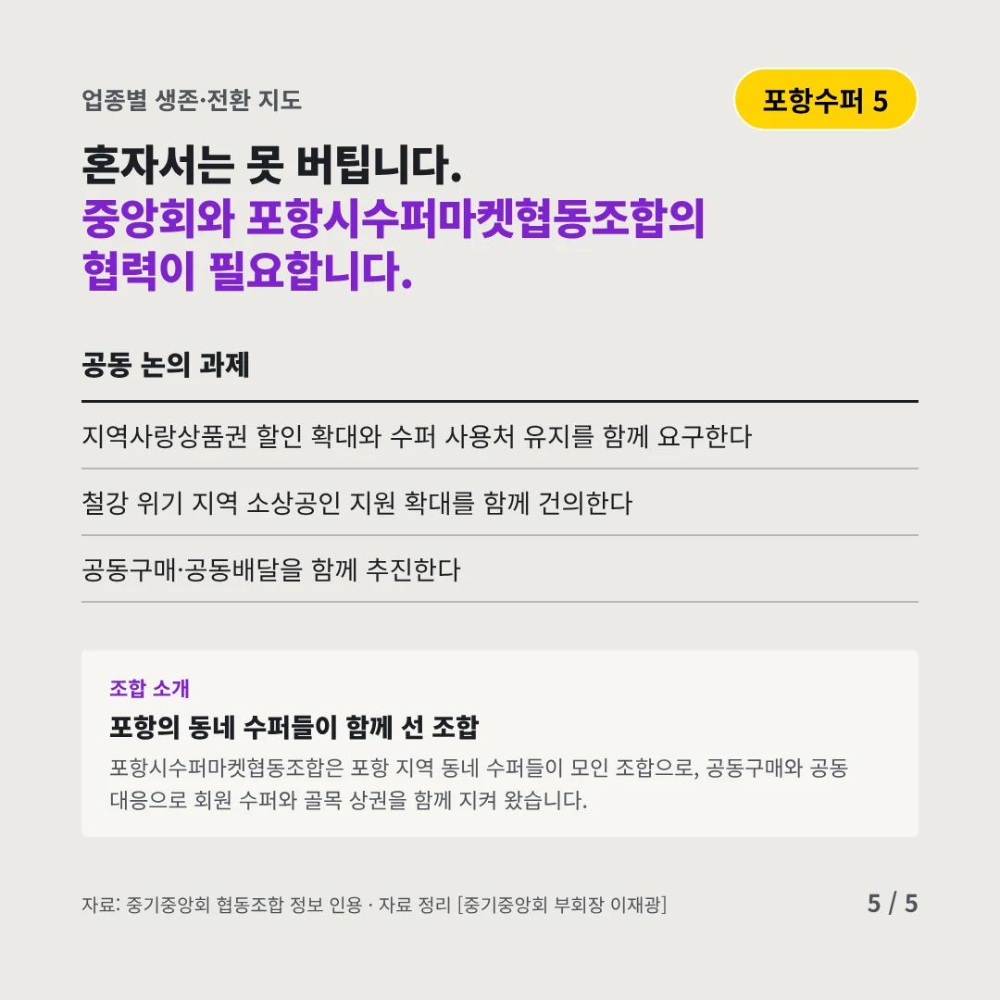
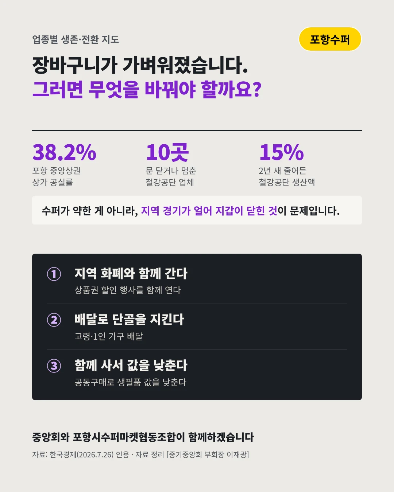

포항시수퍼마켓협동조합
공장이 멈추자, 장바구니도 가벼워졌다
38.2% 포항 중앙상권 상가 공실률(2026.1분기)






철강도시의 불황이 동네 장보기까지 번졌습니다. 포항 동네 수퍼는 어디로 가야 할까요?
숫자로 보는 현실
- 10곳문 닫거나 멈춘 철강공단 업체2024년 2곳에서 다섯 배로(2025)
- 15%2년 새 줄어든 철강공단 생산액16.3조→13.9조 원
- 12.5%10년 새 줄어든 철강공단 근로자1만 5천 명에서 1만 3천 명으로
무엇이 바뀌었나
- 일자리: 철강 일자리가 줄었다공단 가동률이 떨어지고 문 닫는 업체가 늘었다
- 소비: 지갑이 닫혔다근로자 가족의 소비가 줄며 동네 장보기도 줄었다
- 상권: 원도심이 빈다중앙상권 상가 공실률이 38%를 넘었다
그래도 길은 있다
- 지역 화폐와 함께 간다지역사랑상품권 할인·환급 행사를 동네 수퍼에서 함께 연다
- 배달로 단골을 지킨다고령·1인 가구 장보기 배달로 단골 손님을 지킨다
- 함께 사서 값을 낮춘다공동구매로 생필품 가격을 낮춰 알뜰 장보기를 돕는다
한 장 요약

조합 소개
포항시수퍼마켓협동조합은 포항 지역 동네 수퍼들이 모인 조합으로, 공동구매와 공동 대응으로 회원 수퍼와 골목 상권을 함께 지켜 왔습니다.
자료: 한국경제(2026.7.26)